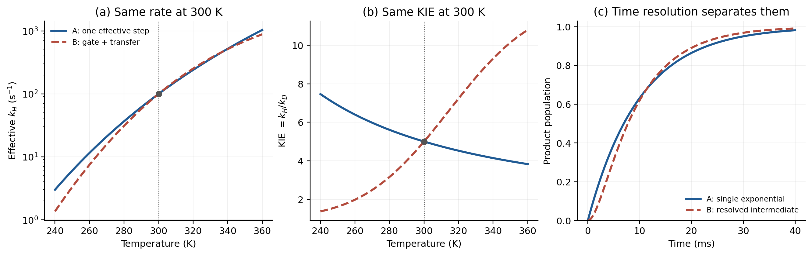

Hydrogen Transfer Series - Part I
Observables and Model Validation
An experiment does not directly display a reaction coordinate, a tunneling pathway, a diabatic coupling, or a transition-state geometry. It records counts, currents, intensities, concentrations, and arrival times. Molecular theory is needed to connect those signals to microscopic mechanisms—but that connection is an inverse problem, and it is rarely unique. This first note separates what is observed from what is inferred, then gives a practical protocol for comparing hydrogen-transfer calculations with experiment.
1. Three levels that should not be conflated
In casual discussion, a rate constant is often called a direct observable. Strictly, even a rate constant is already a fitted quantity. It is useful to distinguish three levels:
- Raw signals: detector counts, absorbance, fluorescence, current, pressure, mass-to-charge intensity, neutron or X-ray scattering intensity, and NMR voltage.
- Processed observables: concentration traces, spectra, equilibrium constants, apparent rate constants, kinetic isotope effects, product branching ratios, structural distributions, and state lifetimes.
- Mechanistic latent variables: transition-state structures, free-energy barriers, tunneling transmission coefficients, diabatic couplings, reorganization energies, donor–acceptor distance distributions, and “tunneling-ready” configurations.
The first two levels are tied to a measurement protocol. The third is obtained only after adopting a physical model. A large H/D kinetic isotope effect can strongly constrain a mechanism, but it is not itself a direct measurement of a tunneling fraction: zero-point energy, equilibrium isotope effects, commitment factors, hidden intermediates, and a change of rate-determining step can all modify the measured ratio.
2. What can experiments observe?
| Experimental family | Processed observable | What it constrains | What remains model-dependent |
|---|---|---|---|
| Steady-state and pre-steady-state kinetics | \(k_{\mathrm{obs}}(T,\mathrm{pH},p,\eta)\), rate law, activation parameters | Reaction order, saturation, kinetic bottlenecks, competing channels | Which microscopic step owns the measured rate |
| H/D/T labeling and KIE | \(\mathrm{KIE}=k_H/k_D\), label location in products | Whether H motion is involved in a kinetically important region | Separation of zero-point, tunneling, pre-equilibrium, and commitment effects |
| Product and competition measurements | Yield, regioselectivity, stereoselectivity, branching ratio | Which channels survive to products and which step controls selectivity | Transient intermediates and recrossing before product formation |
| Equilibrium and electrochemical measurements | \(K_{\mathrm{eq}}\), \(pK_a\), redox potential, current–potential relation | Driving forces, protonation states, thermodynamic coupling | Microscopic path and individual reorganization coordinates |
| IR, Raman, NMR, EPR, microwave, and tunneling-splitting spectroscopy | Peak positions, widths, splittings, exchange rates, state populations | Local bonding, nuclear delocalization, exchange, and quantum-state structure | Assignment of a peak or splitting to a unique geometry or pathway |
| Transient absorption, time-resolved IR, XAS, and scattering | State lifetimes and time-dependent site- or structure-sensitive signals | Ordering of electronic, protonic, solvent, and skeletal events | Conversion of a spectral component into a unique charge and geometry |
| X-ray, neutron, and electron scattering | Average structure, density, pair correlations, disorder | Proton positions, hydrogen bonds, and structural populations | The rare transition region and its dynamical probability flux |
| Controlled perturbations | Response to substitution, pressure, viscosity, mutation, solvent, or potential | Causal sensitivity and possible gating coordinates | Whether correlated changes arise from the proposed microscopic variable |
Orthogonality matters more than the sheer number of measurements. KIE constrains nuclear motion; a rate law constrains network topology; a site-specific transient spectrum constrains event order; a product distribution constrains surviving channels. A recent aqueous PCET study made this point experimentally: thermodynamics, KIEs, and rate laws alone were insufficient to resolve the pathway, so optical spectroscopy, nitrogen K-edge XAS, time-resolved X-ray solution scattering, electronic structure, and molecular dynamics were combined.
3. Why is calculation necessary?
The experiment-to-mechanism map is many-to-one
Different microscopic networks can produce nearly the same single-exponential decay or the same room-temperature KIE. Recovering a mechanism from a small set of observables is therefore an underdetermined inverse problem. Calculation supplies a forward model: assume a mechanism and molecular Hamiltonian, predict the observables, and ask whether the prediction survives new conditions.
Many useful questions are counterfactual
We may want to know how much the rate would change if nuclear tunneling were “turned off,” if one solvent coordinate were frozen, or if the donor–acceptor distance distribution were narrowed without changing the electronic structure. These interventions cannot usually be performed cleanly in the laboratory. They can be defined computationally, but their answers belong to the chosen model and must not be presented as direct measurements.
Microscopic variables are hidden
A transition-state ensemble, a diabatic crossing seam, a vibronic coupling \(V(\mathbf R)\), or a solvent reorganization coordinate is not read directly from a detector. Theory converts such hidden variables into predicted rates, isotope effects, spectra, or structural distributions that can be tested. The value of the hidden-variable picture is proportional to the number of independent observables it predicts—not to how intuitively attractive its molecular animation appears.
4. A minimal measurement equation
A useful abstraction is
Here \(\boldsymbol\theta\) contains the microscopic model parameters and state populations; \(\rho\) specifies the ensemble or nonequilibrium state; \(\hat O\) is the observable operator or kinetic output; \(\mathcal I\) represents instrumental convolution and finite resolution; \(b\) is background; and \(\epsilon\) is noise. A fair comparison requires the calculation to reproduce the right-hand side at the same temperature, composition, pressure, isotope substitution, time resolution, and preparation protocol as the experiment.
Comparing a computed electronic barrier directly with an observed rate skips almost this entire equation. The rate additionally depends on statistical populations, entropy, transmission or nonadiabatic factors, recrossing, solvent response, and the surrounding kinetic network.
5. A reproducible identifiability test
The following synthetic example is deliberately simple. Model A is a single effective transfer step. Model B contains an isotope-insensitive gate followed by an isotope-sensitive transfer. Both are calibrated at 300 K to
For the serial model, the reported effective rate is the inverse mean first-passage time,

The result is not that temperature-dependent KIE or ultrafast spectroscopy always determines a unique mechanism. It shows why a mechanism that matches one number has barely been tested. Additional observables should be chosen to maximize separation between competing forward predictions.
6. How should calculation be compared with experiment?
- Match the chemical object. Verify isotope placement, protonation state, conformer, electronic state, solvent composition, concentration regime, and electrode or photon preparation.
- Predict the measured quantity. Convert energies and couplings into \(k(T)\), KIE, a spectrum, a lifetime, or a structural distribution. Do not validate a coupling by comparing it with an experimental rate without the rate theory that connects them.
- Reproduce experimental averaging. Include conformer populations, orientations, solvent and protein configurations, isotope mixtures, instrumental response, and time-window integration when they matter.
- Distinguish apparent from intrinsic kinetics. Embed the calculated elementary step in a microkinetic model whenever diffusion, binding, pre-equilibrium, commitment factors, or multiple channels contribute to \(k_{\mathrm{obs}}\).
- Use calibration and validation separately. Parameters fitted to the 300 K H rate have not predicted that datum. Test them against D/T substitution, temperature, pressure, driving force, spectra, or a held-out perturbation.
- Carry uncertainty to the observable. Propagate electronic-structure error, finite sampling, rate-theory approximation, parameter uncertainty, and experimental error. Agreement within an unexplained factor is not a mechanism proof.
- Compare alternatives. Ask whether a different mechanism can explain the same observations. A mechanistic claim becomes stronger when a new observable is predicted to distinguish the alternatives and then succeeds experimentally.
7. Where does V-SHAKE enter this chain?
The motivating V-SHAKE work samples geometries satisfying the NEO diabatic vibronic crossing condition
and evaluates the geometry-dependent vibronic coupling \(V(\mathbf R)=\Delta(\mathbf R)/2\). This answers a computational diagnostic question: does a single minimum-energy crossing point, a constant coupling, or one donor–acceptor coordinate adequately represent the crossing region? The resulting seam point cloud and coupling distribution are not themselves experimental observables, equilibrium probabilities, or rates.
To confront experiment, the seam information must be given statistically meaningful weights and inserted into a rate theory or spectral forward model. That model should then predict \(k_H(T)\), \(k_D(T)\), KIE, or another measured response. This distinction is central: V-SHAKE can audit assumptions inside a rate theory without yet validating the final rate prediction.
8. A compact validation checklist
| Question | Minimum evidence |
|---|---|
| Did we model the measured chemical step? | Rate law or microkinetic assignment plus isotope/product tracing |
| Is nuclear motion kinetically important? | KIE under controlled conditions, preferably over temperature or another perturbation |
| Is the proposed event order correct? | Time- and site-sensitive spectroscopy or scattering |
| Is the computed ensemble relevant? | Structural or spectroscopic population checks under the experimental conditions |
| Does the hidden-variable model make a testable prediction? | A held-out rate, isotope, spectrum, pressure, solvent, potential, or mutation response |
| Is the mechanism identifiable? | Explicit comparison with plausible alternative mechanisms across multiple observables |
Code and data used in this note
- observable_identifiability.py generates the two synthetic mechanisms, the temperature scan, the transient product populations, and the figure.
- observable-identifiability.csv contains the temperature-dependent H/D rates and KIE values plotted in panels (a) and (b).
References
- Dickinson, Paenurk, and Hammes-Schiffer, “Diabatic Seam Space Sampling for Hydrogen Tunneling Systems with Nuclear–Electronic Orbital Theory,” arXiv:2609.03942v1 (2026).
- Hammes-Schiffer and co-workers, “Nuclear–Electronic Orbital General Rate Theory: Predicting Hydrogen Kinetic Isotope Effects in the Deep Tunneling Regime,” J. Chem. Theory Comput. (2026).
- Tyburski, Liu, Glover, and Hammarström, “Proton-Coupled Electron Transfer Guidelines, Fair and Square,” J. Am. Chem. Soc. 143, 560–576 (2021).
- Migliore, Polizzi, Therien, and Beratan, “Biochemistry and Theory of Proton-Coupled Electron Transfer,” Chem. Rev. 114, 3381–3465 (2014).
- “Electronic and solvent reorganization in proton-coupled electron transfer captured by ultrafast X-rays,” Nature Communications (2026).
- Kopf et al., “Recent Developments for the Deuterium and Tritium Labeling of Organic Molecules,” Chem. Rev. 122, 6634–6718 (2022), for the scope and interpretation of primary and secondary isotope effects.